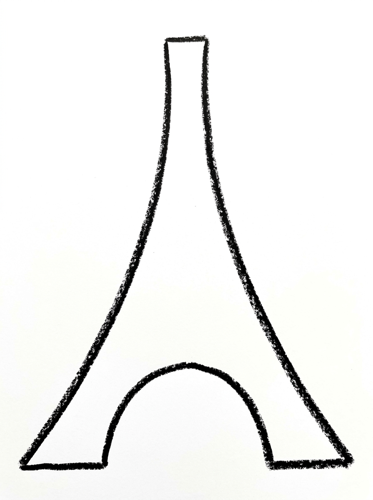
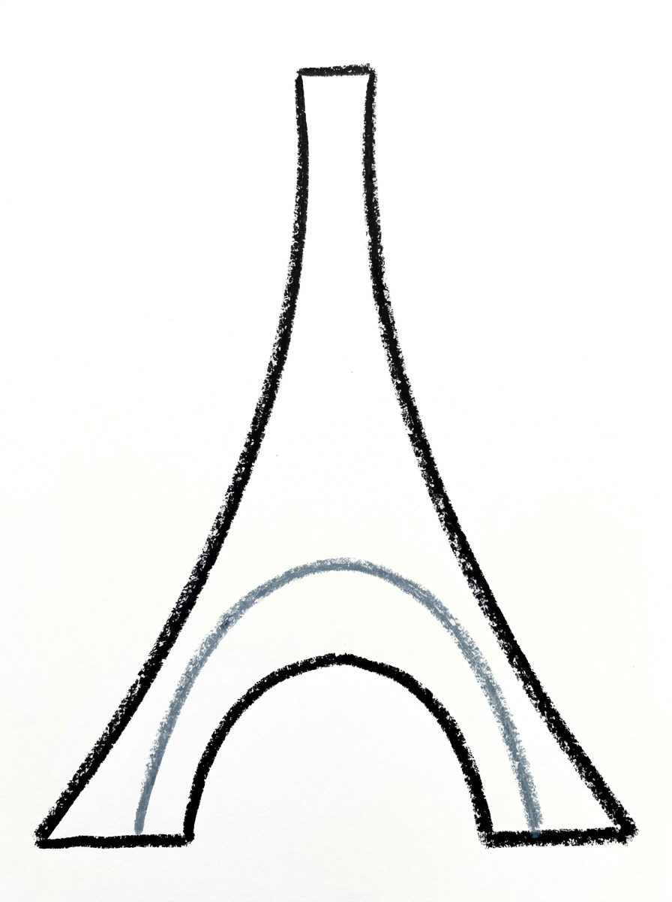
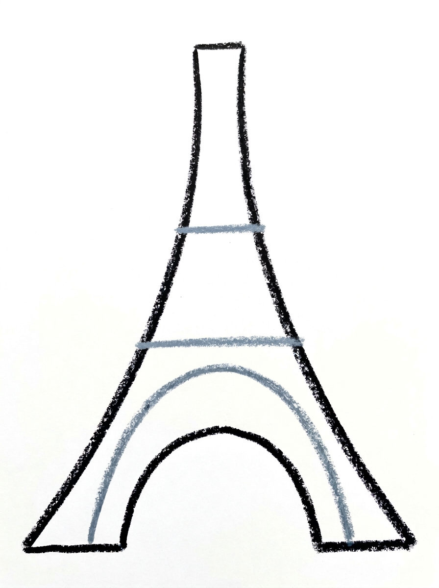
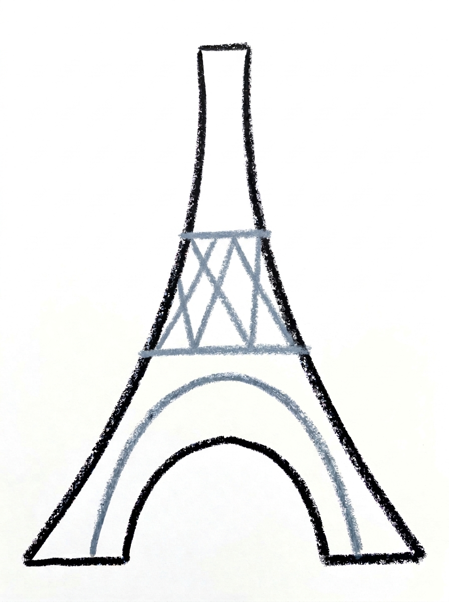
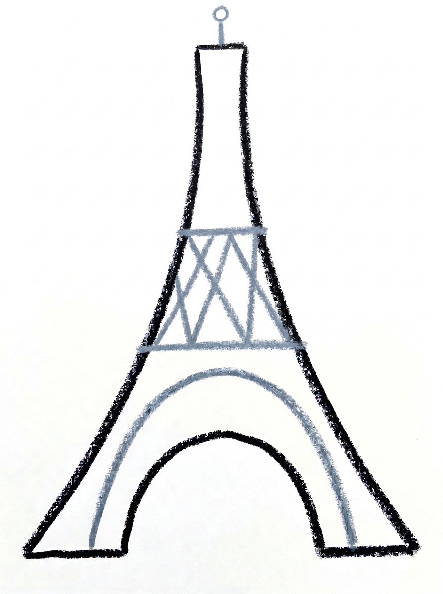

Eiffel Tower Drawing for Kids How to Draw An Eiffel Tower in 6 Easy Steps
Quick Answer
Draw the tower outline with two sides that curve inward from a wide base, leaving an arch opening between the legs. Add an inner arch, two straight floor lines, X-shaped lattice beams between them and a beacon on top, then colour it bronze brown. Made for ages 3 and up — no signup needed, just print and draw.
At a Glance
- Subject: How to draw an eiffel tower
- Ages: 3+
- Steps: 6 steps
- Time: ~15 min
- Difficulty: Easy
- Supplies: Paper, crayons
The Eiffel Tower looks complicated, but for kids it breaks down beautifully: two curving sides, one arch, two straight lines and some X shapes. Children enjoy drawing something so famous that the grown-ups recognise it instantly — and the lattice X's are surprisingly satisfying to fill in.
✏️ Draw Your Eiffel Tower in 6 Easy Steps
One step per box — this step by step eiffel tower drawing shows each new part in a different color so kids can see exactly what changed.
Step 1: The Tower Outline

Draw the tower's outline: two long sides that start wide apart at the bottom of your paper and curve inward as they go up, finishing with a short flat top — and leave an arch-shaped opening between the legs at the bottom, like the real Eiffel Tower.
Step 2: The Arch

Draw one upside-down U inside the bottom of the tower, following the arch opening — its two ends touch the bottom of the tower near the corners. This is the big arch.
Step 3: The Two Floors

Draw two straight lines across the tower — one about one-third of the way up and one about two-thirds of the way up. Each line touches both sides of the tower. These are the tower's two floors.
Step 4: The Lattice Beams

In the section between the two floor lines, draw diagonal lines that cross each other to make X shapes. Each X touches the floor line above it and the floor line below it.
Step 5: The Beacon

Draw one short line standing on the flat top of the tower, with one tiny circle on its top end. This is the beacon light.
Step 6: Color It In

Color your tower! Warm bronze brown for the whole tower — the outline, the arch, the floors and the lattice beams — and gold for the beacon. Leave the space under the arch white. Great drawing!
📊 Eiffel Tower Drawing by Age
Every age can join in — just adjust the job.
| Age | What they can do | Tip |
|---|---|---|
| 3-4 | Draw the two curving sides with help and colour the whole tower bronze brown. | The inward curve is the big idea — start wide at the bottom and 'walk' the lines toward each other as they climb. |
| 4-5 | Add the arch, the two straight floor lines and the beacon on top. | Use thirds together: one line a little way up, one line higher — exact measuring is not needed for it to look right. |
| 6+ | Draw the full tower including the X-shaped lattice beams between the floors. | Challenge them to keep each X touching both floor lines, and to add a Paris sky, sun and tiny buildings around the tower. |
🖨️ Download Your Free Eiffel Tower Drawing Printable
The printable lays out all 6 steps one per box, big enough for little hands — kids draw right alongside each step.
⬇️ Open Free Printable 🖨️ Print🎁 Free printable for ages 3+
🗼 Paris Postcard Tower
Turn the finished tower into a Paris postcard: draw a border around the page, add a sun, a few clouds and tiny rooftops along the bottom, then write 'Bonjour from Paris!' on the back and mail or hand-deliver it to someone. Kids take extra care with a drawing that is actually going somewhere, and grandparents especially love receiving them.
What You'll Need to Draw An Eiffel Tower
You need paper, a pencil and crayons or markers — tall paper suits this drawing best, since the tower is much taller than it is wide. For Step 6 keep warm bronze brown for the whole tower and gold (or yellow) for the beacon. A ruler is optional; the floor lines are fine drawn freehand, and slightly wobbly lines suit the hand-drawn look.
What They're Learning
This tutorial practices long curved lines that mirror each other, the upside-down U of the arch, straight horizontal lines for the two floors, and diagonal lines crossing into X shapes for the lattice beams. Kids also practice simple fractions without numbers — placing lines about one-third and two-thirds of the way up — and leaving a space white on purpose, the arch opening.
Make It Yours
Once the tower stands, try: a sunset version with an orange sky behind the bronze tower, the tower at night with a yellow beacon and stars, a row of tiny Paris rooftops and chimneys along the bottom, or a second, smaller tower beside it as if seen from farther away.
🛒 Our Favorite Drawing Supplies
These are the supplies we reach for in our own home — washable (because kids), quality paper, and enough colors to avoid fights.
As an Amazon Associate, MomYouNeedThis earns from qualifying purchases — at no extra cost to you.
💡 Eiffel Tower Drawing Tips for Parents
Step 1 is the whole drawing in miniature: the sides must start wide apart and bow inward as they rise, like the real tower. If your child draws straight sides, the result reads as a ladder or a rocket — draw one curving side together first, then let them copy it on the other side, and keep the arch opening between the legs.
In Step 6, remind them to leave the space under the arch white. Colouring that gap solid is the most common slip, and it hides the arch they worked on in Step 2 — the white opening is what makes the tower look light and real.
✏️ Eiffel Tower Drawing Step by Step
This Eiffel Tower drawing is built like the real thing: the outline goes up first, and every later step adds its lines inside a tower that is already standing. The arch is drawn inside the outline, the two floors cross it next, the lattice fills in after that, and the beacon and colour come last.
The step that decides whether the tower reads properly is Step 4. The criss-cross X beams belong only in the middle section, between the two floor lines — that is the only place the steps put them. Children often keep going and fill the bottom and top sections with Xs too, which turns the tower into a waffle.
The remedy is to name the three sections out loud before Step 4 starts: arch at the bottom, lattice in the middle, empty at the top. A few stray Xs will not ruin anything, but the empty top section is what keeps the tower looking tall.
See free eiffel tower printable for more.
✏️ One Shape Per Step, Six Steps Total
Run these checks as this Eiffel Tower drawing grows and most slips get caught while they are still one line. After Step 2, look at the arch: the upside-down U should land with both ends touching the bottom of the tower, near the corners. An arch that floats above the bottom edge means the U started too high.
After Step 3, count the sections stacked inside the outline — there should be three — and check that each floor line touches both sides of the tower. A floor that stops short of one side reads as a shelf, not a floor. After Step 4, pick any X and check that it touches the floor line above it and the floor line below it; an X that touches neither is floating.
The last check is the beacon in Step 5: one short line standing on the flat top, with exactly one tiny circle on its end. If the circle sits beside the line instead of on top of it, the beacon looks broken before colouring even starts.
See free eiffel tower printable for more.
🗼 The Real Tower Behind the Drawing
Once the tower is coloured, finish the scene around it. Draw one straight ground line under the legs, then a wide wavy line across the bottom of the page for the river, passing in front of the tower's feet. Add one small bridge — a flat line with two short legs — beside the tower, and the drawing becomes a place instead of an object.
Fold the finished sheet in half and it also works as a card: bronze tower outside, message inside. It is a natural card for a bon voyage, a thank-you to a French teacher, or the front of a travel journal page.
See free eiffel tower printable for more.
❓ Eiffel Tower Drawing FAQs
What is the easiest way to draw the Eiffel Tower?
Draw two long sides that curve inward from a wide base, leave an arch opening at the bottom, then add two straight floor lines and X shapes between them. This tutorial breaks the tower into exactly those six steps.
What age is this Eiffel Tower drawing for?
It is made for ages 3 and up, though the lattice X's in Step 4 suit the older end best. Younger children can draw the outline, arch and floors with help and enjoy colouring the tower bronze.
What supplies do we need to draw the Eiffel Tower?
Paper, a pencil and crayons or markers are all you need — tall paper works best. For Step 6, have warm bronze brown and gold (or yellow) ready.
Is the Eiffel Tower drawing printable really free?
Yes — every printable on MomYouNeedThis is 100% free to download and print. No signup, no payment, just tap the download button.
How do I print the Eiffel Tower drawing tutorial?
Open the PDF and print at 100% scale, not 'fit to page', so the six step pictures print at their designed size. Your child can follow them in order beside a tall sheet of paper.
Why do the tower's sides curve inward?
Because the real tower does — its legs start wide apart for strength and sweep inward as they rise. Keeping that inward bow in Step 1 is the single detail that makes a child's drawing instantly read as the Eiffel Tower.
What are the X shapes in the middle of the tower?
They are the lattice beams — the criss-cross iron framework the real tower is built from. In Step 4 each X sits between the two floor lines and touches both, which is what holds the pattern together.
Why do we leave the space under the arch white?
The arch is an opening you could walk through, so it stays empty and white, showing the background through it. Colouring it in would make the tower look solid and hide the arch drawn in Step 2.
📚 Keep Exploring
- ✏️ All 53 Drawing Tutorials 53 free step-by-step drawing tutorials for kids.
- 🎀 Cute Coloring Free cute coloring pages for kids.
- ✏️ Drawing Practice Free printable drawing pre-writing worksheet for toddlers.